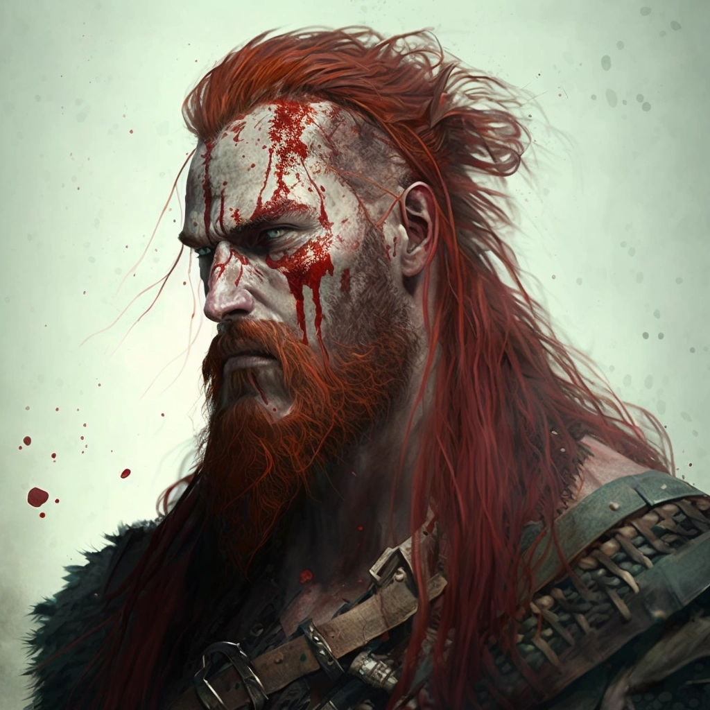

Svafnir was a successful courier — hardy, capable of defending himself, and welcome at every hearth he came to. He never arrived empty-mouthed: a new stanza, a fresh story, a verse half-finished and ripe for embellishment over the next horn of ale. He had begun to accumulate epics of his own. His critics, of course, claim his mead of poetry was the one Odin shat.
Since Fimbulwinter, the routes have grown teeth. Villages have gone silent or fallen to madness. Colleagues have been hunted down by cannibalistic peasants who could not bear another winter. Yet the rounds must be made. He leaves his homestead in the keeping of his cousin Yrsa and her partner Inge, since his circuits — once sixteen villages, now eleven — take up most of the year. The rest he lives on his own hunting and foraging.
He is not afraid of a fight. He doesn't particularly need the cause to be good if the pay is. Before battle he sings loudly and swallows the blends prepared for him by Harald, the medicine man — mushrooms and herbs that numb the pain and ignite his sight. The bloodlust comes wrapped in lurid hallucinations, and these provide entertaining, if not entirely accurate, fodder for the next stanza.
| Rune | Power | Description | Source | |
|---|---|---|---|---|
| ᚷ | Gingungagap | Aggressive Stance | Greater damage is inflicted on your foes as you take a combat stance. | from Ulfheðnar — Rager |
| ᚷ | Gebgift | Power Attack | The attacker studies their opponent for kinks in their armour and openings left after they attack. Capitalizing, the attacker can ignore some defences. | |
| ᚲ | Cansuz | Bear's Posture | Change your demeanor to emulate that of the sacred bear. You gain the increased ability to shake off attacks. | |
| ᛁ | Isaice | Death Charge | You charge through your opponents, attacking them as you do so. | |
| ᚢ | Uruz | Howl, Rally the Pack | Howl and invite other allies to join in to create a glorious lupine anthem that regenerates and rejuvenates. | |
| ᛉ | Elhaz | Reckless Power Attack | You push beyond your limits to use your weapon with great skill and accuracy, resulting in a mighty blow to your opponent. | |
| ᛞ | Dagaz | Muspeli Nightmare | The spell creates a small aperture through which the atmosphere of Muspelheim is drawn into the battlefield. | via Skald |
| ᚺ | Hagalaz | Snows of Jotunheim | Inject the victim's mind with illusions of being trapped or snared by the world around him/her, making your victim's responses slower. | via Skald |
| ᛏ | Tiwaz | Melody of Discord | Assail the victim's mind with a cacophony of voices. The wall of noise is not easily ignored. | [if I don't need to spend for the corner] |
| Rune | Power | Source / Notes | |
|---|---|---|---|
| ᚷ | Gingungagap | Enter Rage | from Ulfheðnar — Rager |
| ᚷ | Gebgift | Martial Prowess | |
| ᚺ | Hagalaz | Combat Awareness | |
| ᛉ | Elhaz | Frenzy | |
| ᚢ | Uruz | Stout | |
| ᛏ | Tiwaz | Giant Size | |
| ᛞ | Dagaz | Constitution | |
| ᛁ | Isaice | Drive Back | if not needed for the corner |
| ᚲ | Cansuz | Warrior of Song | from Skald |
A sixteen-village circuit has been reduced to eleven. The next several settlements past Serkollr's hall have gone dark. The village itself is being torn down for scrap as folk retreat into the caves. The able-bodied are conspicuously absent. Rumors of warmer twilight to the south, of strong magic at Faroe, of folk moving to Islandia.
Svafnir gets high and seeks insight into the path forward. A vivid dream: a hulking man bound in white chains, struggling, growing tired. Obi, in the same hour, sees a king rising — and a power behind him that corrupts.
The village is desperate — for food, for new accommodations. Svafnir extracts a ship, supplies, two children, and a mentor — Gunnvor Olaedottir, the navigator, late thirties — in exchange for taking them onward. Obi successfully petitions to add his daughter Nanna to the children sent away. Thormod Hrodisson and Siv Steinolfdottir round out the passengers. Jarl Styrkollr Atsurrsson, his wife Freydis Steinolfdottir, and his second Halaeif Holmgavtasson watch them sail.
A storm chases the ship into the bay. The trading town is ruins; everyone has gone inland. Shadows resolve into deserters in matching colours. Svafnir knocks one back stunned, brutally drives back the next, and cuts through three on the left with a Death Charge. One runs. Two surrender. Dagfinn says nothing the entire engagement — which is when Obi and Svafnir realize how bad it is.
Some draugr come for whoever stole something. Svafnir fights like a demon and is eventually brought down. Obi drags him out of the way. In the morning, one of the children says they saw a castle.
The "castle" is the army of Haskell Torinson, sent by King Athelstan to gather villages and tribes at the Allthing. Two camps stand suspiciously close. Warnings are given against the camp of the White God. The monastery had been seized by a follower of Thor who threw out the priests. When Haskell's son was killed there, Baleygr whispered in Haskell's ear. Haskell entered, killed the man, desecrated the body, and threw it into the ocean — an honored enemy. He is now holed up apart from his own.
A man named Hafdan refuses to let them speak to Haskell. They slip into the monastery anyway — a pair of tracks leads them in. Torn tapestries, hastily-built altars to Thor. A faint voice from inside: "I'm here, come fetch me!" Another: "There's no banshee here." Svafnir calls out — "Haskell, I bring you word." Hafdan is exasperated. Svafnir again: "The white chains you struggle against make you weak." Hafdan turns. "I agree."
Obi speaks his vision. Haskell scoffs — "Are these the Norns?" Obi looks, for once, at Dagfinn: "Please, please say something clever and cutting." Dagfinn says nothing. The gods, Haskell says, have left us. Svafnir: "Are we dependent on the gods?" Hafdan explains the doctrine: only their god needs to forgive. Svafnir snorts. "Well, that's convenient." They are invited to Haskell's tent. The hunt for the banshee continues.
Skoll and Hati, children of Fenrir.